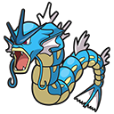

Pokémon Bleu
-

Tortank
Mon tout premier pokémon, sur gameboy color. Mon personnage s'appelait Angie.
-

Léviator
Ces deux pokémon sont perdus, et les deux seuls dont je me souviens de cette époque. RIP.